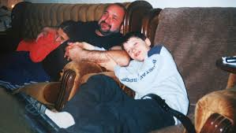
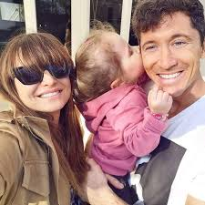

Wychowywał się w sportowej rodzinie. Ojciec Krzysztof (zm. 2005)[477] uprawiał judo i grał w piłkę nożną w trzecioligowym Hutniku Warszawa. Matka Iwona była siatkarką pierwszoligowego AZS Warszawa. Po śmierci męża objęła po nim funkcję kierownika hali sportowej w podwarszawskim Lesznie, a następnie pełniła funkcję wiceprezesa miejscowego klubu Partyzant, w którym pierwsze piłkarskie kroki stawiał Robert. Następnie była również nauczycielką wychowania fizycznego.  Ma starszą siostrę Milenę. W czerwcu 2015 został ojcem chrzestnym jej syna, Leona. Jest katolikiem. W 2012 wziął udział w akcji Nie wstydzę się Jezusa zainicjowaną przez Stowarzyszenie ks. Piotra Skargi. W 2014 podczas prywatnej audiencji dla piłkarzy Bayernu po meczu z Romą, spotkał się w Watykanie z papieżem Franciszkiem. Jego piłkarskim idolem był francuski piłkarz Thierry Henry. Jest wielbicielem sportów motorowodnych. 22 czerwca 2013 w kościele Zwiastowania Najświętszej Maryi Panny Parafii św. Anny w Serocku wziął ślub z Anną Stachurską, zawodniczką karate i specjalistką do spraw żywienia. Mają dwie córki, Klarę (ur. 4 maja 2017) i Laurę (ur. 6 maja 2020).  9 października 2017 z wyróżnieniem obronił pracę licencjacką na kierunku wychowanie fizyczne o specjalizacji trenersko-menedżerskiej w Wyższej Szkole Edukacji w Sporcie w Warszawie. 5 października 2020, na tej samej uczelni, obronił pracę magisterską dotyczącą analizy składu ciała i wydolności tlenowej studentów WSES. Robert i Anna Lewandowscy mieszkają na co dzień w dzielnicy Bogenhausen, nieopodal Ogrodu Angielskiego w Monachium. Są właścicielami posiadłości na Mazurach, w miejscowości Stanclewo, nad jeziorem Jełmuń. W listopadzie 2017 Lewandowski odebrał klucze do apartamentu Złota 44, wyposażonego m.in. w strefę rekreacyjną z basenem, siłownią, salą fitness i symulatorem gry w golfa.